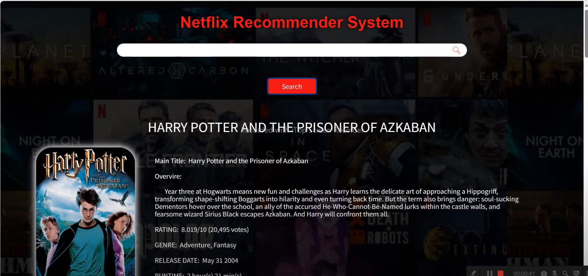
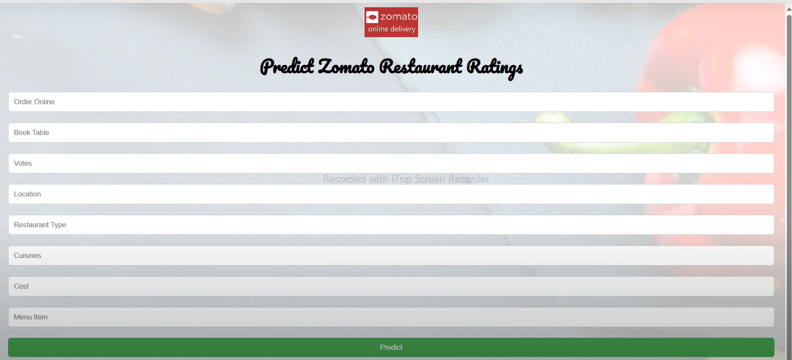

Machine Learning
netflix recommendation system
To develop a personalized recommendation system for Netflix users to enhance their streaming experience by suggesting content based on their preferences and viewing history.Approach: Data Collection, Data Preprocessing, Feature Engineering, Model Selection, Training, Evaluation, Deployment.
Learn more

Machine Learning
Predicting Zomato Restaurant Ratings
The project unfolds in four key steps, starting with data collection, followed by exploratory data analysis (EDA), then the creation of the predictive model, and finally, deployment on Flask.
Approach: 𝘿𝒂𝙩𝒂 𝑪𝙤𝒍𝙡𝒆𝙘𝒕𝙞𝒐𝙣, 𝙀𝙭𝙥𝙡𝙤𝙧𝙖𝙩𝙤𝙧𝙮 𝘿𝙖𝙩𝙖 𝘼𝙣𝙖𝙡𝙮𝙨𝙞𝙨 (𝙀𝘿𝘼), 𝘽𝙪𝙞𝙡𝙙𝙞𝙣𝙜 𝙩𝙝𝙚 𝙈𝙤𝙙𝙚𝙡, 𝘿𝙚𝙥𝙡𝙤𝙮𝙢𝙚𝙣𝙩 𝙤𝙣 𝙁𝙡𝙖𝙨𝙠
Learn more